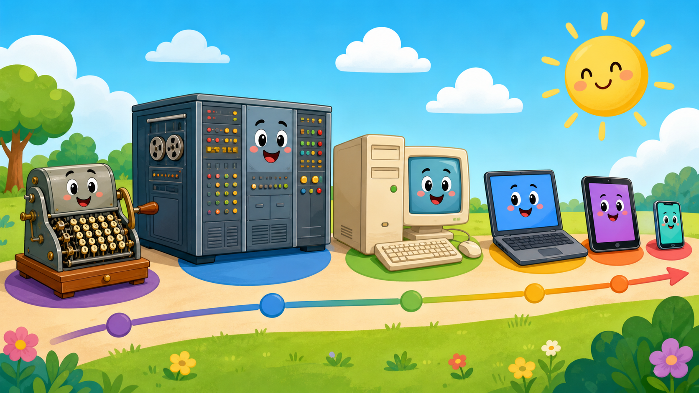
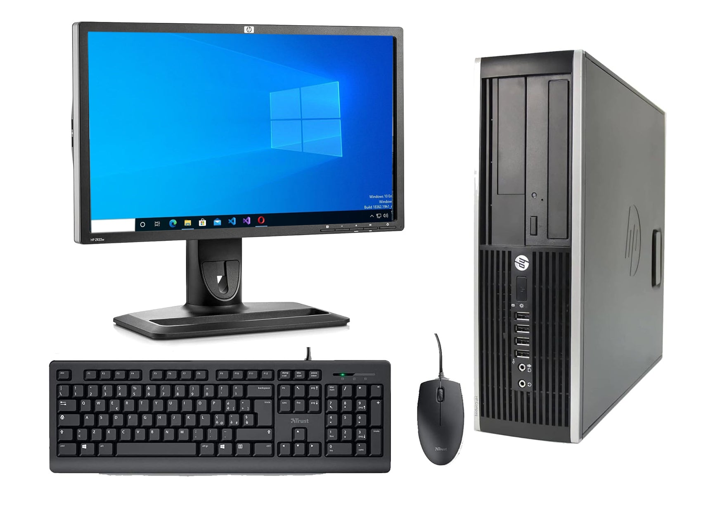
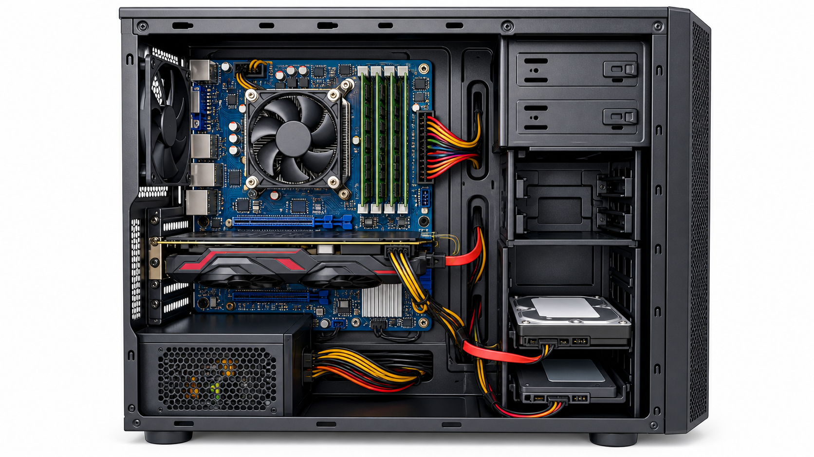
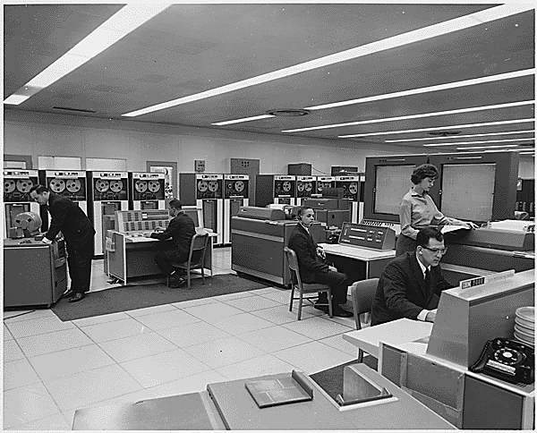
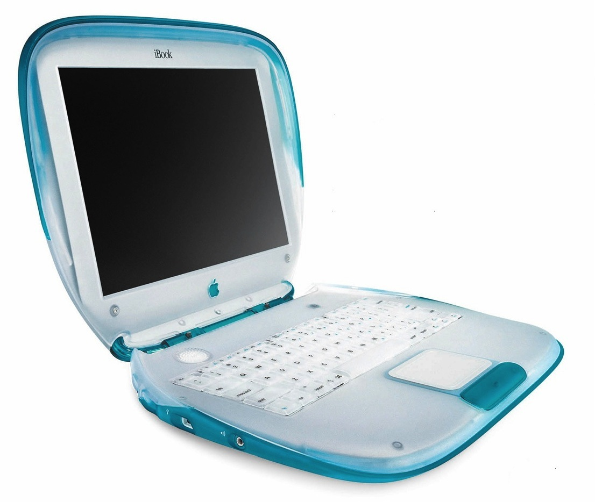
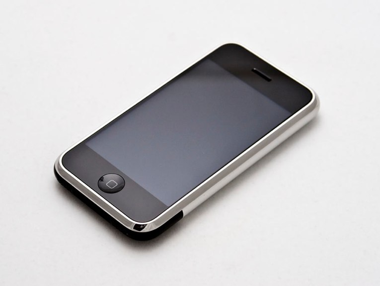
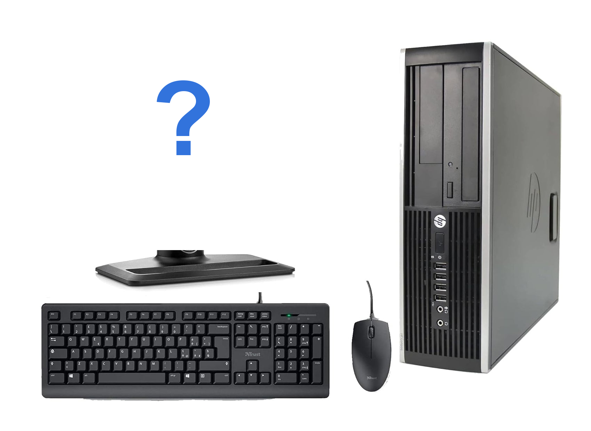
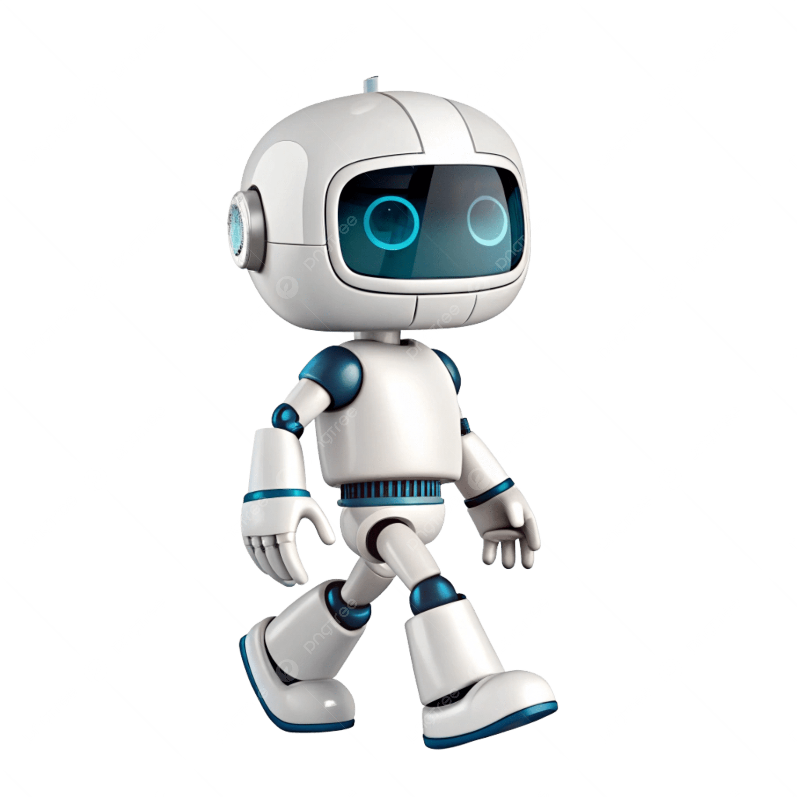

Time travel
The little history of computers


It can help with real things we know from home and school.
Fingers, counting frames, then machines with wheels and buttons.
Some took up almost a whole room. They had lots of lights, wires and buttons.

How big do you think it could be?


The fan moves air inside the box.





Look at the pictures. Which computer came first?
Choose one place. There are many good answers.
